Extensional Fault Systems
Created Thursday 19 March 2020
@GEOLOGY @ESH @YEAR1
Extentisional @Fault = normal fault
Areas of formation:
- @tectonic environments, particularly at ocean ridges
- Continental rifting
- On the back arc behind mountain belts
Useful for working out movement of ocean basins and what tectonics did in the past
Faults often group into a major fault surrounded by many minor ones
@Synthetic_Faults have minor faults parallel to the main one (dipping in the same direction and they are all normal faults)
@Antithetic_Faults ≠ synthetic (and there can be a mix of both)
They can be on any scale
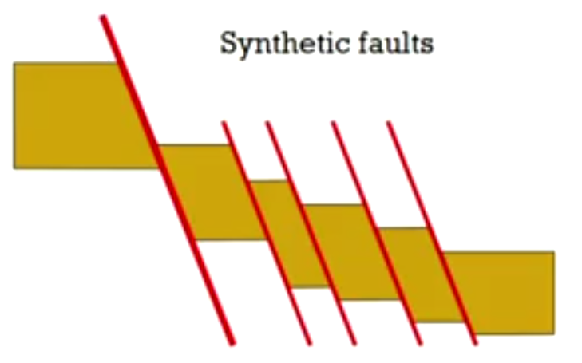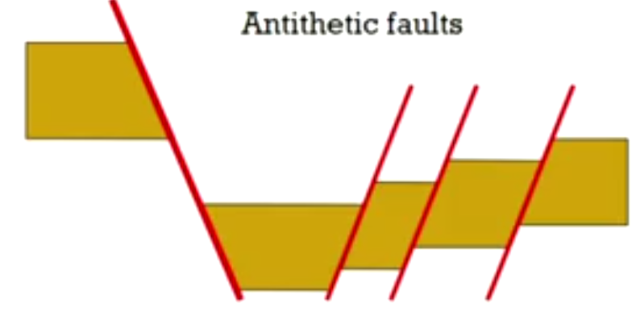
Splays and Tips
A @Splay is where a minor fault joins up with a main fault at a single fault
Causes much more displacement
The @Tip is the point at which a fault ends, or the point of zero displacement
A @Horsetail can occur when there are multiple splays on the same fault
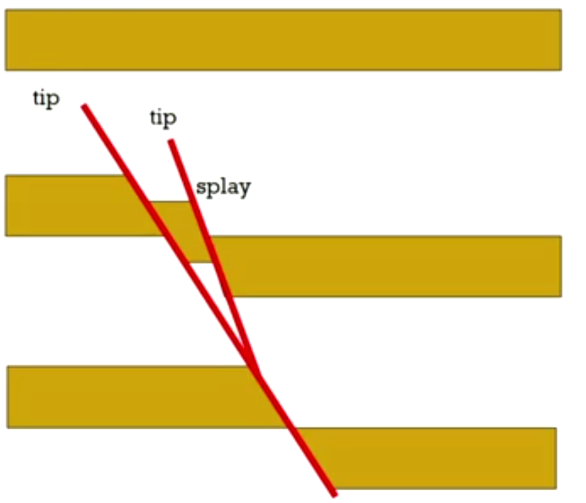
Horst and Grabens
@Horsts and @Grabens happen at antithetic faults → high and low blocks
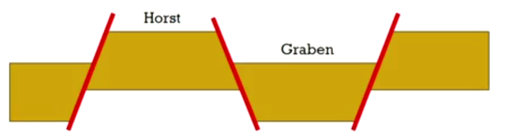
@Keele has a graben on campus and the faults go right through Barnes
Half grabens can occur where the @hanging_wall rotates down → wedge shape
Happen at @Listric faults
The wedge can fill with sediment → know if the fault formed at the same time as the sediment
If the fault was moving while the sediment was being depositied, it is called a @Growth_Fault
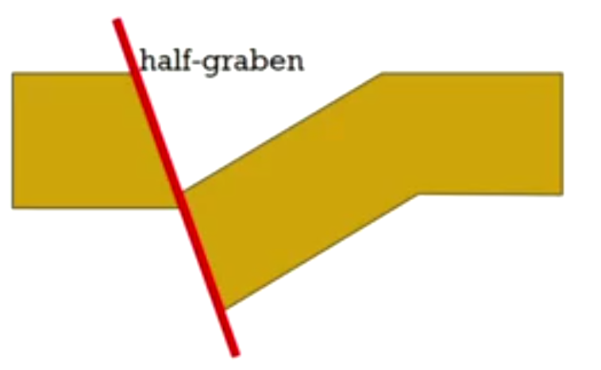
Domino Faults
Sets of synthetic faults can be pushed over like dominos
They are generally at 60° → can't do much displacement → rotate until they reach 30° → low angle normal faults → there is not enough stress anymore to rotate them past 30°
All fauts rotate at the same speed at the same time
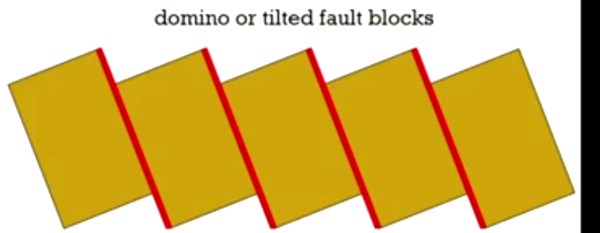
Clearly, there is not just a void beneath the blocks; plastic deformation happens beneath
Often form at areas of crustal weakness, whether lithological or hydrogeological → these areas are exploited for oil and gas
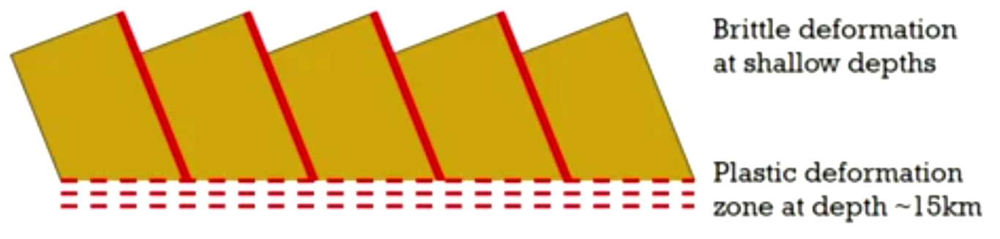
Listric Faults
Listric = spoon shaped
Very high angle faults near the surface that get shallower with depth
The hiatus normally indicates a weakness
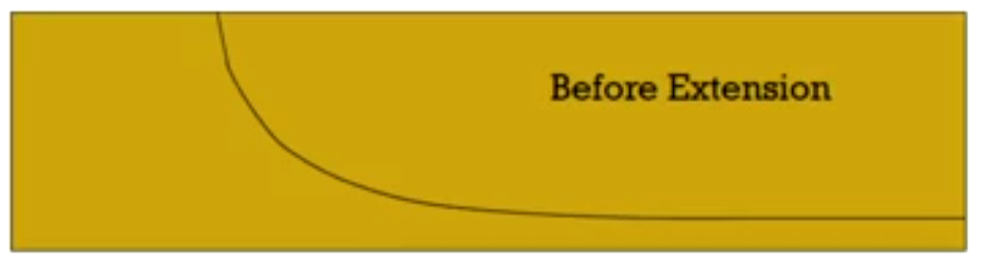
The hanging wall after extension will rotate down onto the @foot_wall
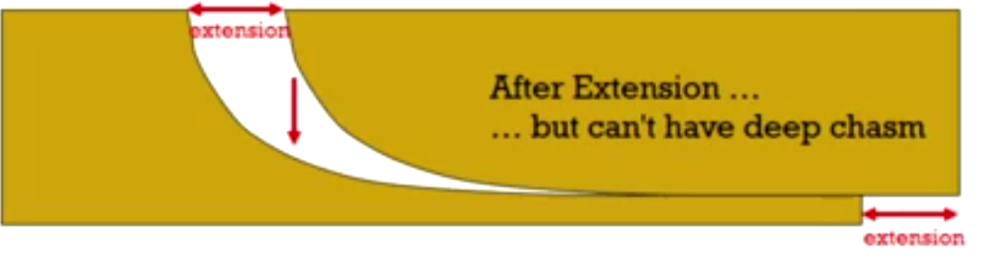
Then the hanging wall rolls down the slope of the footwall → a fold
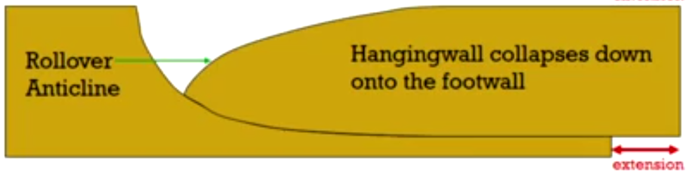
@Rollover_anticlines
Because there is little stress left after it has rolled down, the hanging wall doesn't continue to move → stress moves into the footwall → listric growth faults.
We can calculate the amount of displacement by measuring the volume of the half graben shape in the last diagram
Half graben volume = volume of chasm in second diagram
Listric Growth Faults
Happen with lots of extension
Fills with sediment and hanging wall continues to roll over → listric fans
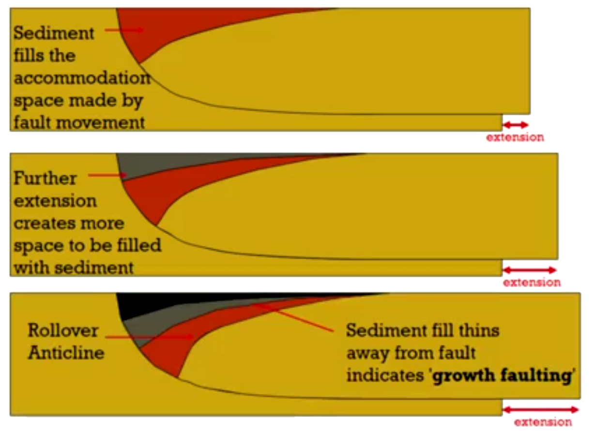
Listric Fans
Happen when the hanging wall slumps
The synthetic faults get younger moving towards the foot wall, but antithetic fans do exist too.
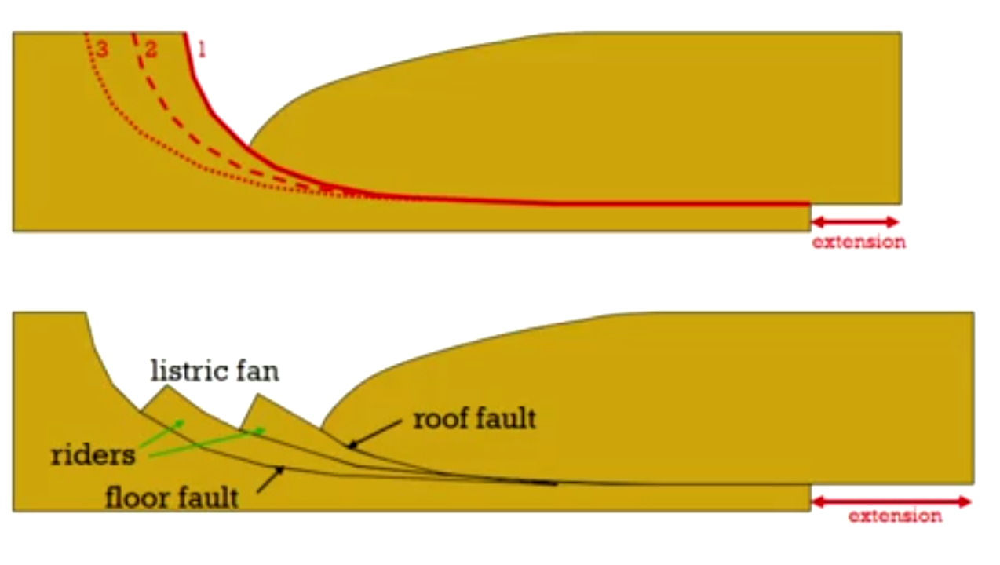
Transfer Faults
It is very rare to only have one type of fault in an extentional regime
Two offset listric faults and they might be moving at different speeds or different directions, with a transfer fault inbetween
Forms because of the difference in velocity
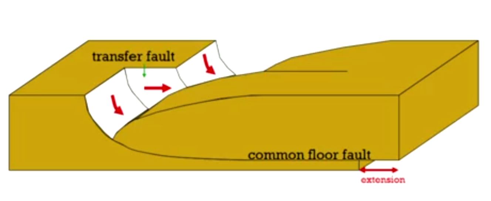
Relay Ramps
The centres of these two faults do not align
Fault 1 downthrows the footwall of fault 2 → rotates the blocks inbetween the faults → @relay_ramp
The ramp will eventually become a transfer fault
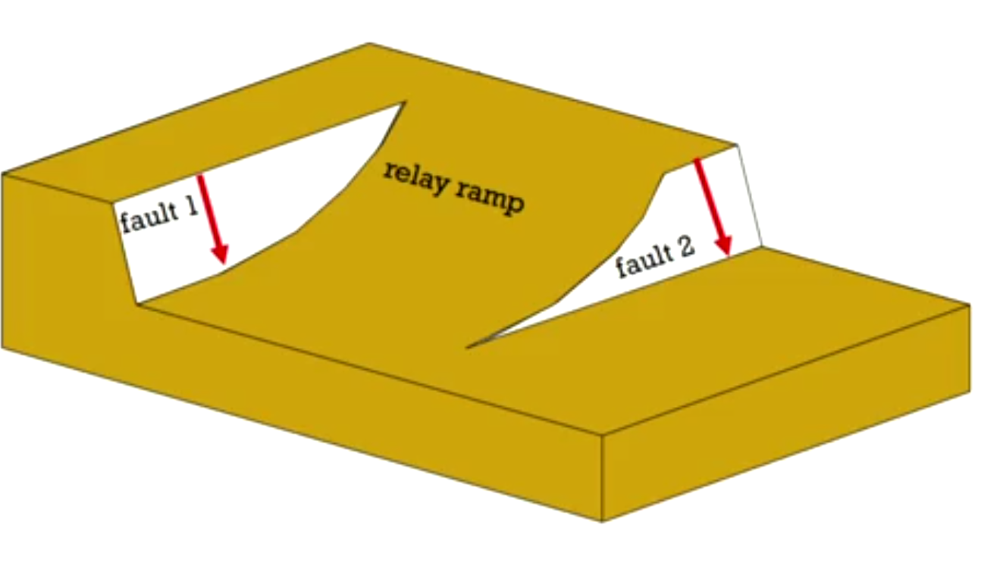
Larger scale extensional tectonics
Brittle deformation → faults discussed
Ductile deformation → slowly pulled apart and thinned. Oceanic crust begins to form at 100m of extension and rifting stops
Rocks are grouped into megasequences:
- Pre-Rift material (deposited before extension starts)
- 5km: grabens begin to form
- 50km: rift basins form
- 100km: Oceanic crust formation (and accommodation space made)
- Post-rift material
- @Thermal_Subsidence
- Syn-Rift material is material that has been deposited at the same time as tectonics